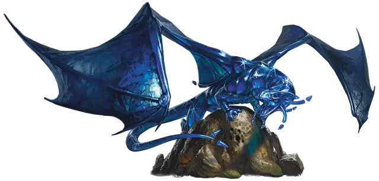

Молодой сапфировый дракон
Young Sapphire Dragon
Большой Дракон (Самоцветный), законно-нейтральный

Класс Доспеха 17 (природный доспех)
Хиты 157 (15к10 + 75)
Скорость 40 футов, летая 80 футов, лазая 40 футов, копая 20 футов
| мод | спас | ||
|---|---|---|---|
| СИЛ | 21 | +5 | +5 |
| ЛОВ | 14 | +2 | +6 |
| ТЕЛ | 20 | +5 | +9 |
| мод | спас | ||
|---|---|---|---|
| ИНТ | 16 | +3 | +3 |
| МДР | 15 | +2 | +6 |
| ХАР | 16 | +3 | +7 |
Навыки Восприятие +10, История +7, Скрытность +6, Убеждение +11
Сопротивление урону звук, электричество
Иммунитет к состояниям испуг
Чувства слепое зрение 30 футов, тёмное зрение 120 футов, пассивное Восприятие 20
Языки Общий, Драконий, Телепатия 120 фт.
Опасность 9 (5000 опыта)
Бонус мастерства +4
Особенности
Паучье лазанье. Дракон может лазать по сложным поверхностям, включая потолки, без совершения проверок характеристик.
Прокладывание туннеля. Дракон может копать сквозь сплошной камень со скоростью копания, уменьшенной вдвое, оставляя за собой туннель диаметром 10 фт.
Персонализация дракона. Как уже говорилось в «Руководстве Мастера», вы можете настроить блок статистики любого дракона, чтобы отразить его уникальный характер. Незначительные изменения, такие как приведенные ниже, легко сделать, и они не влияют на ПО дракона. (Fizban's Treasury of Dragons)
Языки. Большинство драконов предпочитают говорить на Драконьем, но для общения с союзниками и приспешниками изучают Общий. Но, учитывая высокий Интеллект и продолжительный срок жизни, драконы могут легко выучить дополнительные языки. Вы можете добавить языки в блок статистики дракона.
Навыки. Большинство драконов владеют навыками Восприятие и Скрытность, а многие драконы владеют дополнительными навыками. Как и в случае с языками, вы можете изменить список навыков дракона (даже удвоить бонус мастерства), чтобы отразить его интересы и занятия. Вы также можете наделить дракона владениями инструментами, особенно если дракон проводит время в гуманоидной форме.
Другие черты и действия. Вы можете заимствовать черты и действия у других монстров, чтобы придать дракону уникальную изюминку. Рассмотрим эти примеры:
Изменение формы. Вы можете решить, что дракон приобретает это действие в более раннем возрасте, чем обычно, особенно если вы хотите представить в своей кампании дракона в гуманоидной форме. (См. металлические драконы).
Поглощение урона. Вы можете решить, что красный или золотой дракон не только не получает урон от огня, но и исцеляется от него. (См. мясной голем [flesh golem]).
Облёт. Дракон - проворный летун, быстро вылетающий из зоны досягаемости врагов. (См. перитон [peryton]).
Подражание. Изображение персонажей или их союзников может стать забавным трюком для хитрого дракона. (См. кенку [kenku]).
Омоложение. Вы можете решить, что драконы в вашей кампании, будучи неотъемлемой частью Материального плана, почти невозможно уничтожить. Жизненная сущность дракона может храниться в яйце, из которого он появился на свет, в его кладе или в пещерном зале в центре мира, так же как сущность лича спрятана в филактерии. (См. лич [lich]).
Особые чувства. У большинства драконов есть слепое зрение и темное зрение. Вы можете улучшить зрение до истинного зрения или наделить дракона скоростью рытья или чувством вибрации. (См. зрение и свет).
Прокладывание туннеля. Эта особенность может быть присуща любому дракону, обладающему скоростью копания - он может двигаться сквозь твёрдую породу, оставляя за собой туннель. (См. бурый увалень [umber hulk]).
Действия
Мультиатака. Дракон совершает одну атаку Укусом и две Когтями.
Укус. . Рукопашная атака оружием: +9 к попаданию, досягаемость 10 фт., одна цель. Попадание: 16 (2к10+5) колющего урона плюс 4 (1к8) урона звуком.
Коготь. . Рукопашная атака оружием: +9 к попаданию, досягаемость 5 фт., одна цель. Попадание: 8 (1к6+5) рубящего урона.
Использование заклинаний (Псионика). Дракон накладывает одно из следующих заклинаний, не требующее компонентов заклинания и использующее Интеллект в качестве базовой характеристики (Спасбросок от заклинаний Сл 15):
• 1/день каждое: диссонирующий шёпот [dissonant whisper], удержание личности [hold person], слияние с камнем [meld into stone],.
Ослабляющее дыхание (перезарядка 5-6). Дракон выдыхает импульс высокотонального, почти неслышного звука в конусе 30 фт. Каждое существо в этой области должно совершить спасбросок Телосложение Сл 17. В случае провала существо получает 33 (6к10) урона звуком и становится недееспособным до конца своего следующего хода. В случае успеха существо получает половину урона без дополнительных эффектов.
Описание
Громкие столкновения - это часть самой сути сапфировых драконов. Воинственные и территориальные, они яростно защищают свои логова, устраивая засады на незваных гостей и планируя нападения на врагов. Звуковой импульс их дыхания сеет слабость, оставляя жертву неспособной дать отпор.
Светящийся синий. Чешуя и перепонки крыльев сапфировых драконов имеют различные оттенки синего цвета - от светлых тонов весеннего неба до насыщенной кристаллической лазури сапфировых самоцветов и спрессованного льда ледников . На свету их чешуя сверкает и переливается, как светящиеся вспышки звезд. Псионическая природа драконов очевидна из костной структуры их тел и рогов. Колючки хвоста и кончики рогов - это отдельные части, но они парят на месте, удерживаемые психической энергией, пока драконы живы. Эти левитирующие рога и шипы слегка меняются в зависимости от настроения драконов, покачиваясь от удовольствия или вспыхивая от гнева.
Искусство войны. Воинственные сапфировые драконы разрабатывают стратегии и засады, основываясь на своей способности маневрировать под землей. Сапфировый дракон часто предпочитает отложить нападение, предпочитая сначала оценить вторгшихся, чтобы разработать наиболее выгодный способ атаки.
Сапфировые драконы следят за признаками деятельности аберраций и других существ, испорченных Дальним планом. Они часто вступают в союз с изумрудными драконами, используя знания своих сородичей об оккультных явлениях для отслеживания следов вторжения существ из Дальнего плана. Получив информацию, сапфировые драконы уничтожают чужеродное влияние до того, как оно начнёт распространяться.
Люди, живущие или путешествующие глубоко под землей, могут легко вступить в конфликт с сапфировым драконом, если пересекут его территорию. Но иногда сапфировые драконы устанавливают мирные отношения со скальными или глубинными гномами, полагаясь на них в защите территории вокруг своего логова.
Боевые клады. Сапфировые драконы предпочитают оружие и доспехи, записи о военной истории и тактике, а также магические предметы, защищающие от урона психической энергией или ментального вторжения. Центральным элементом клада сапфирового дракона обычно является каталогизированная, упорядоченная коллекция боевого снаряжения, которая может содержать древние реликвии огромной мощи.